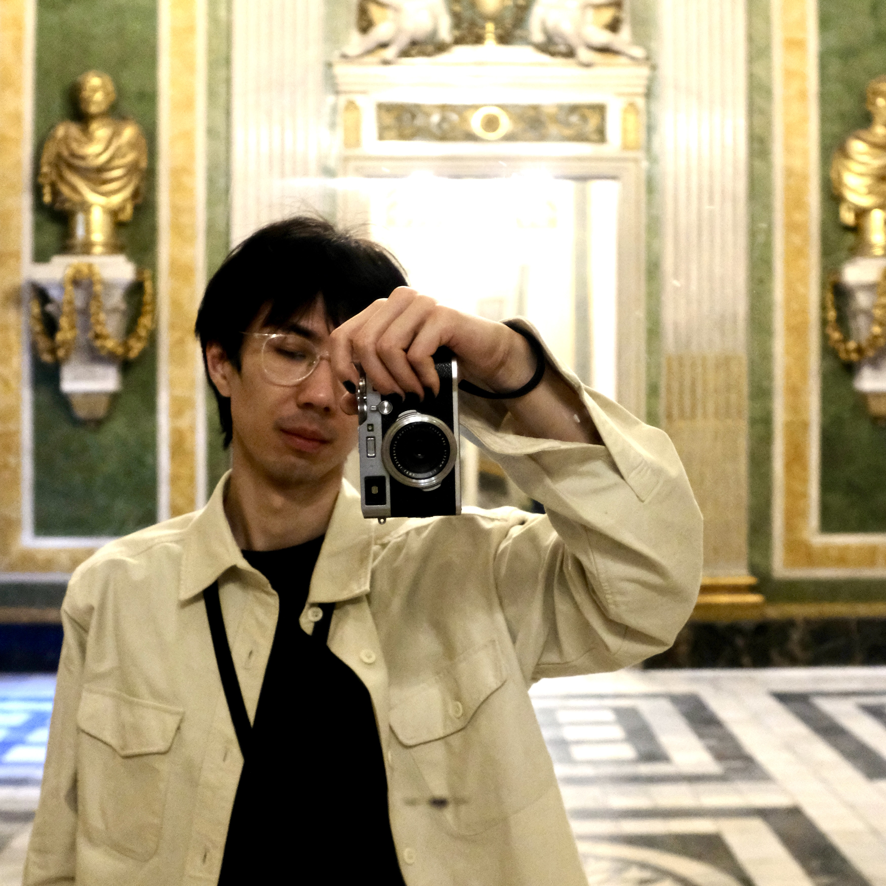
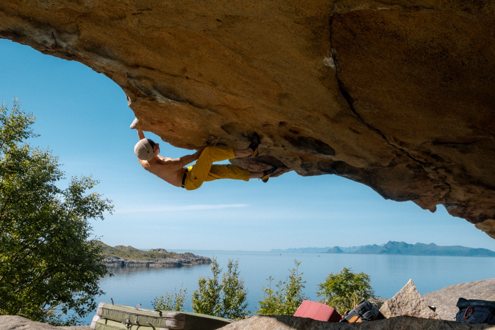
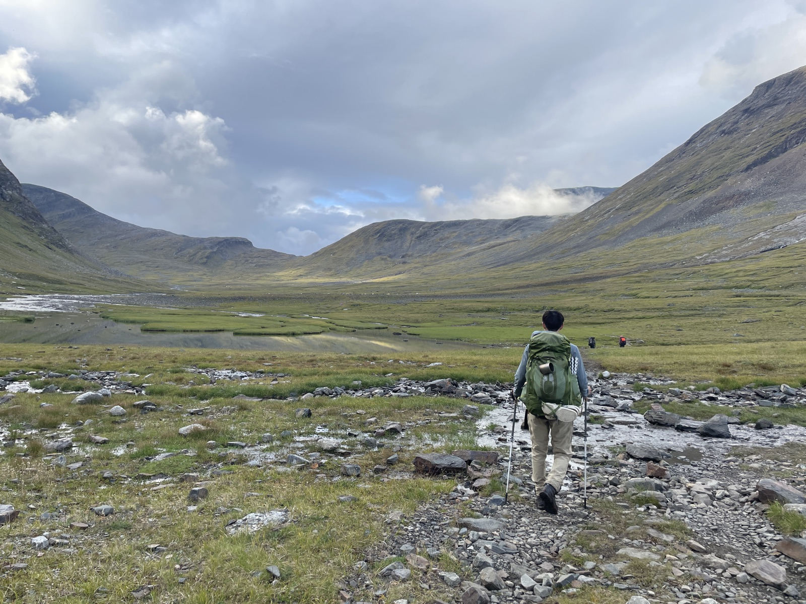
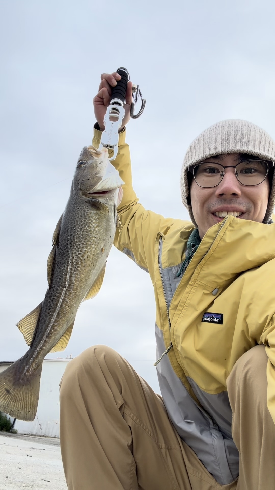

Robot learning
Train policies from limited demonstrations and evaluate whether they transfer beyond the training setup.
Zheyu Zhuang 庄哲宇 Roboticist

I build visuomotor policies that keep working when scenes, cameras and robots change. My research connects data-efficient learning with the perception, control and hardware needed to test it in the real world.
01 / Skills
Three connected capabilities, developed through research and tested on physical robots.
Train policies from limited demonstrations and evaluate whether they transfer beyond the training setup.
Connect visual features with task and robot state so policies attend to what matters for control.
In practice: PALM and Robot-centric Pooling
Integrate sensing, calibration, ROS and real-time control, then deploy and diagnose the full system.
02 / Research
Learning useful visual representations from actions and building policies that generalise across real-world changes.
Learns where to look directly from action supervision.
Task and robot state guide visual attention without spatial labels. The learned regions support RGB cropping, augmentation and point-cloud filtering.
On real robots: 76.7% in-domain success vs 48.3% for the strongest baseline.
Finds control-relevant visual detail within intermediate CNN features.
Proprioception selects local features within a CNN map, helping policies focus on action-relevant detail without manual image crops.
Generalises by aligning perception around the robot hand.
Local hand-centred perception and proprioception help manipulation skills transfer across workspaces, camera views and robot embodiments.
Mirrored demonstrations transfer skills across space with consistent images, state and 6 DoF actions.
End-to-end motor supervision changes what a visual encoder attends to, even in the same scene.
Policy saliency guides augmentation to make manipulation robust to visual distractions.
Image–proprioception alignment helps a policy recognise the body it controls.
03 / About
I am a postdoctoral researcher in Robotics, Perception and Learning at KTH, working with Professor Danica Kragic. I earned my PhD in Robotics at the Australian National University with Professor Robert Mahony. My work connects data-efficient learning with real-robot deployment.
04 / Systems
Each brought perception, control, software and hardware together around a different robotics problem.

I co-developed GoferBot, a vision-based human–robot interaction system for collaborative furniture assembly. It combines human action recognition, visual servoing and handover behaviour so the robot can coordinate naturally with a person.
Watch GoferBot

I contributed as a member of the ACRV team that built Cartman, combining custom hardware with robotic perception for warehouse picking. The system won the 2017 Amazon Robotics Challenge, and the team leader later spun this work out into Lyro Robotics.
05 / Mentoring
I contribute through mentoring, teaching, editorial work and peer review.
Mentored student projects contributing to CoRL, RA-L, and ICRA publications, and supervised undergraduate work resulting in an IROS paper.
Tutored five graduate courses and one undergraduate course, and led a Robotic Vision Summer School workshop later incorporated into teaching at Monash University.
Associate Editor for IROS 2025 and 2026 and ICRA 2027; reviewer for IEEE RA-L, IEEE T-RO, RSS, CoRL, ICRA, and IROS.
06 / Publications
Recent work focuses on data-efficient visuomotor learning; earlier papers span closed-loop control, 3D perception, human–robot collaboration and integrated manipulation systems.
07 / Off the clock
A few things that get me outside and away from a screen.

Helps me completely empty my head as the survival instinct screams, but oftentimes it's back to the familiar pattern of stopping half way and rethinking my approach.

Often question myself why I put myself through this — days without a shower — but in the end, the cleared mind, the breathtaking views, and being off the grid and off the internet make it all worth it.

Maybe it's the 10th time getting skunked, but all it takes is just one fish to keep me going.